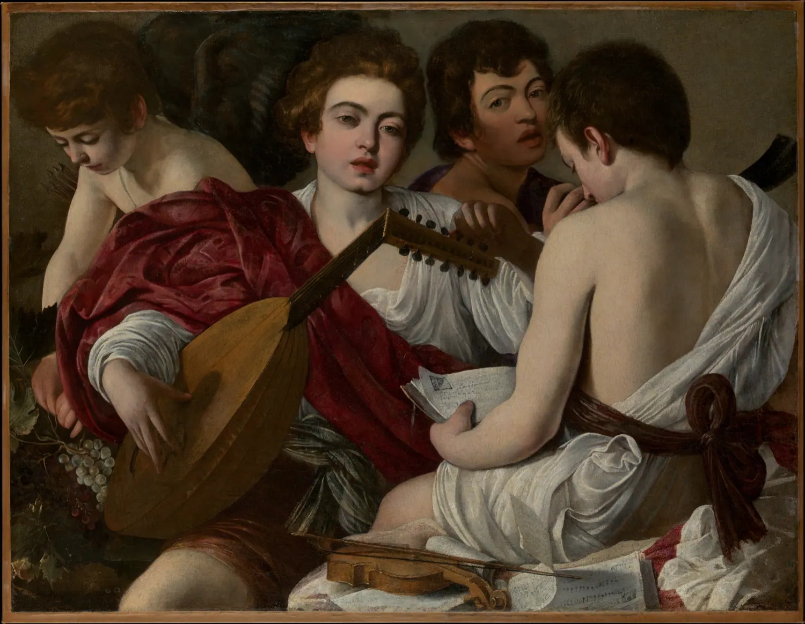

손으로 베끼던 악보를 인쇄하다
페트루치는 여러 성부로 된 음악을 모아 인쇄했습니다. 17세기의 연주자들이 악보를 사서 함께 연주한 배경을 짚어 보세요.
메트로폴리탄 미술관에서 읽기
지역별 탐색
세기를 건너
페트루치는 여러 성부로 된 음악을 모아 인쇄했습니다. 17세기의 연주자들이 악보를 사서 함께 연주한 배경을 짚어 보세요.
메트로폴리탄 미술관에서 읽기크리스토포리가 만든 초기 피아노로 헨델의 아리아를 연주합니다. 건반을 누르는 힘이 소리에 어떻게 드러나는지 들어 보세요.
1720년 피아노로 연주한 헨델 듣기1877년 축음기는 소리를 기록하고 다시 들려줄 수 있었습니다. 미국 의회도서관에 남은 1890년경 군악대의 녹음으로 그 음색을 들어 보세요.
미국 의회도서관에서 듣기